<!DOCTYPE html>
<!-- Adapted from: College Algebra
Version bc
Corrected Edition
by
Carl Stitz, Ph.D. Je Zeager, Ph.D.
Lakeland Community College Lorain County Community College
July 4, 2013 pdf generated January 26, 2015,  pages 1-25-->


<html>
<head>
<title>MAT-102: 00-Preliminaries</title>
<style>
table, td
{
  padding-top: 0.5em;
  padding-bottom: 0.5em;
}
table.center
{
  margin-left:auto;
  margin-right:auto;
}
</style>
<script type="text/x-mathjax-config">
  MathJax.Hub.Config({tex2jax: {inlineMath: [['$','$'], ['\\(','\\)']]}});
</script>
<script type="text/javascript"
  src="https://cdn.mathjax.org/mathjax/latest/MathJax.js?config=TeX-AMS-MML_HTMLorMML">
</script>
</head>

<body>
<H1>00-Preliminaries</H1>
<H2>$\S$ 00.1 Sets of numbers</H2>
<p>
While we would like nothing more than to delve quickly and deeply into the sheer excitement that is Functions, experience
 has taught us that a brief refresher on some basic notions is welcome, if not completely necessary, at this stage.
 To that end, we present a brief summary of 'set theory' and some of the associated vocabulary and notations we
 use in the text. Like all good Math 'books', we begin with a definition.

<p>
A <b>set</b> is a well-defined collection of objects which are called the 'elements' of
the set. Here, `well-defined' means that it is possible to determine if something belongs to the
collection or not, without prejudice.
</p>

For example, the collection of letters that make up the word "coyote" is well-defined and is a set,
but the collection of the worst pizza places in the world is not well-defined, and so is not a set.
In general, there are three ways to describe sets. They are
</p>

<b>Ways to Describe Sets</b>
<ol>
<li> <b>The Verbal Method:</b> Use a sentence to define a set.</li>
<li> <b>The Roster Method:</b> Begin with a left brace '$\{$', list each element of the set only once
and then end with a right brace `$\}$'.</li>
<li> <b>The Set-Builder Method:</b> A combination of the verbal and roster methods using a
"dummy variable" such as $x$.</li>
</ol>
</p>
<p>
<p><b>Example 00-1: Describing sets</b>
<ul>
<li> For example, let $S$ be the set described verbally as: <i>The set of letters that make up the word "coyote".</i></li>
<li> A roster description of $S$ would be $\{c,o,y,t,e\}$. Note that we listed '$o$' only once, even though it
appears twice in "coyote".  Also, the order of the elements doesn't matter, so $\{t,e,y,o,c\}$ is also
a roster description of $S$.</li>
<li>  A set-builder description of $S$ is:
$\{x \; | \; x$ is a letter in the word "coyote"$\}$.  The way to read this is: "The set of elements $x$ such that $x$ is a 
letter in the word "coyote".  </li>
</ul>
</p>
<p>
In each of the above cases, we may use the familiar equals sign '$=$' and write $S = \{c,o,t,e,y\}$ or
$S = \{x \; | \; x$ is a letter in the word "coyote"$\}$. Clearly $t$ is in $S$ and $q$ is not in $S$.
<!-- We express these sentiments mathematically by writing $t \in S$ and $q \notin S.$-->
 Throughout your mathematical upbringing, you have encountered several famous sets of numbers.
 They are listed below.
</p>

<b>Sets of Numbers</b>
<ol>
<li> The Empty Set: $\emptyset = \{ \}$. This is the set with no elements. Like the number
      $0,$ it plays a vital role in mathematics.</li>
<li> The Natural Numbers: $\mathbb{N} = {1, 2, 3, \dots }$ The periods of ellipsis here
       indicate that the natural numbers contain $1$, $2$, $3$, `and so forth.</li>
<li> The Whole Numbers: $\mathbb{W} = {0, 1, 2, \cdots }$</li>
<li> The Integers: $\mathbb{Z} = {\cdots ,-3, -2, -1, 0, 1, 2, 3, \cdots}$</li>
<li> The Rational Numbers: $\mathbb{Q} = \{\frac{a}{b}\; |\; a  \mbox{ and } b \mbox{ are integers }.\}$ 
       Rational numbers are the ratios of integers (provided the denominator is not zero!) It turns out that 
       another way to describe the rational numbers is:
       $\mathbb{Q} = \{x \; | \; x \mbox{ possesses a repeating or terminating decimal representation }\}.$</li>
<li> The Real Numbers: $\mathbb{R} = \{ x \; | \; x \mbox{ possesses a decimal representation }\}.$</li>
<li> The Irrational Numbers: $\mathbb{P} = \{ x \; | \; x \mbox{ is a non-rational real number }\}.$ Said another way,
         an irrational number is a decimal which neither repeats nor terminates.c</li>
<li> The Complex Numbers: $\mathbb{C} = \{ a + bi \; | \; a,b \mbox { are in } \mathbb{R} \mbox{ and } i = \sqrt{-1}\}.$ 
        Despite their importance, complex numbers are not used in this course.</li>
</ol>

<p>
It is important to note that every natural number is a whole number, which, in turn, is an integer.
Each integer is a rational number (taking $b = 1$ in the above definition for $\mathbb{Q}$ produces integers) and the 
rational numbers are all real numbers, since they possess decimal representations.
</p>
<p>
For the most part, we will focus on sets whose elements come from the real numbers $\mathbb{R}$.
</p>
<p>
Recall that we may visualize $\mathbb{R}$ as a line. Segments of this line are called intervals of numbers.
Below is a summary of the so-called interval notation associated with given sets of numbers. For
intervals with finite endpoints, we list the left endpoint, then the right endpoint. We use square
brackets, `$[$' or `$]$', if the endpoint is included in the interval and use a filled-in or `closed' dot, $\bullet$, to
indicate membership in the interval. Otherwise, we use parentheses, `$($' or `$)$' and an `open' circle, $\circ$, to
indicate that the endpoint is not part of the set. If the interval does not have finite endpoints, we
use the symbols $-\infty$ to indicate that the interval extends indefinitely to the left and $\infty$ to indicate
that the interval extends indefinitely to the right. Since infinity is a concept, and not a number,
we always use parentheses when using these symbols in interval notation, and use an appropriate
arrow to indicate that the interval extends indefinitely in one (or both) directions.
</p>
<p>
<p align="center">
<b>Interval Notation</b>
</br>
Let $a$ and $b$ be real numbers with $a < b$.
</p>

<table align="center" >
  <tr>
    <td style="text-align:center">Set of Real Numbers</td>
    <td style="text-align:center">Interval Notation</td>
    <td style="text-align:center" >Region on the Real Number Line</td>
  </tr>
  <tr>
    <tdstyle="text-align:center">$a < x < b$.</td>
   <tdstyle="text-align:center"> $(a, b)$</td>
    <td style="text-align:center">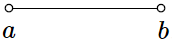</td>
  </tr>
  <tr>
    <tdstyle="text-align:center">$a \leq x < b$.</td>
   <tdstyle="text-align:center"> $[a, b)$</td>
    <td style="text-align:center">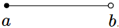</td>
  </tr>
  <tr>
    <tdstyle="text-align:center">$a < x \leq b$.</td>
   <tdstyle="text-align:center"> $(a, b]$</td>
    <td style="text-align:center">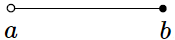</td>
  </tr>
  <tr>
    <tdstyle="text-align:center">$a \leq x \leq b$.</td>
   <tdstyle="text-align:center"> $[a, b]$</td>
    <td style="text-align:center">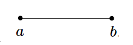</td>
  </tr>
    <tr>
    <tdstyle="text-align:center">$x < b$.</td>
   <tdstyle="text-align:center"> $(-\infty,b)$</td>
    <td style="text-align:center">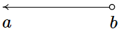</td>
  </tr>
    <tr>
    <tdstyle="text-align:center">$x \leq b$.</td>
   <tdstyle="text-align:center"> $(-\infty,b]$</td>
    <td style="text-align:center">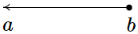</td>
  </tr>
    <tr>
    <tdstyle="text-align:center">$a < x$.</td>
   <tdstyle="text-align:center"> $(a,\infty)$</td>
    <td style="text-align:center">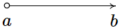</td>
  </tr>
    <tr>
    <tdstyle="text-align:center">$a \leq x$.</td>
   <tdstyle="text-align:center"> $[a,\infty)$</td>
    <td style="text-align:center">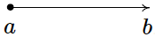</td>
  </tr>
    <tr>
    <tdstyle="text-align:center">$a < x < b$.</td>
   <tdstyle="text-align:center"> $(a,b)$</td>
    <td style="text-align:center">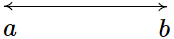</td>
  </tr>
    <tr>
    <tdstyle="text-align:center">All Real numbers, $\mathbb{R}$.</td>
   <tdstyle="text-align:center"> $(-\infty,\infty)$</td>
    <td style="text-align:center">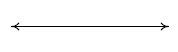</td>
  </tr>
</table></p>
<p>
Note that we could write the inequality $1 /lt x /lt 3$ as $3 \gt x \gt 1$ and still have the same set. An easy way to
remember which inequality symbol to use is that the smaller (closed) end points to the smaller number and conversely
the larger end (open end) is next to the larger value.  There is some evidence that the inequality sign started
ont as a "distorted" equal sign with one end pinched together to denote the side with the smaller value.
<p>
However, it came about, the table below gives a few examples of the notation:
</p>

<table align="center" >
  <tr>
    <td style="text-align:center">Set of Real Numbers</td>
    <td style="text-align:center">Interval Notation</td>
    <td style="text-align:center" >Region on the Real Number Line</td>
  </tr>
  <tr>
    <tdstyle="text-align:center">$1 \le x < 3$.</td>
   <tdstyle="text-align:center"> $[1, 3)$</td>
    <td style="text-align:center">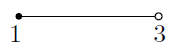</td>
  </tr>
  <tr>
    <tdstyle="text-align:center">$4 \ge x \ge -1$.</td>
   <tdstyle="text-align:center"> $[-1, 4]$</td>
    <td style="text-align:center">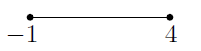</td>
  </tr>
    <tr>
    <tdstyle="text-align:center">$x \le 5$.</td>
   <tdstyle="text-align:center"> $(-\infty, 5]$</td>
    <td style="text-align:center"></td>
  </tr>
    <tr>
    <tdstyle="text-align:center">$x > -2$.</td>
   <tdstyle="text-align:center"> $(-2, \infty)$</td>
    <td style="text-align:center"></td>
  </tr>
  </table></p>


<p>1.1.2 The Cartesian Coordinate Plane</p>

<p>In order to visualize the pure excitement that is Precalculus, we need to unite Algebra and Ge-
ometry. Simply put, we must nd a way to draw algebraic things. Let's start with possibly the
greatest mathematical achievement of all time: the Cartesian Coordinate Plane.5 Imagine two
real number lines crossing at a right angle at 0 as drawn below.</p>

<p>GRAPH</p>


<p>The horizontal number line is usually called the x-axis while the vertical number line is usually
called the y-axis.6 As with the usual number line, we imagine these axes extending o indenitely
in both directions.7 Having two number lines allows us to locate the positions of points o of the
number lines as well as points on the lines themselves.</p>
<p>For example, consider the point P on the next page. To use the numbers on the axes to label this
point, we imagine dropping a vertical line from the x-axis to P and extending a horizontal line from
the y-axis to P. This process is sometimes called `projecting' the point P to the x- (respectively
y-) axis. We then describe the point P using the ordered pair (2;􀀀4). The rst number in the
ordered pair is called the abscissa or x-coordinate and the second is called the ordinate or
y-coordinate.8 Taken together, the ordered pair (2;􀀀4) comprise the Cartesian coordinates9
of the point P. In practice, the distinction between a point and its coordinates is blurred; for
example, we often speak of `the point (2;􀀀4).' We can think of (2;􀀀4) as instructions on how to reach P from the origin (0; 0) by moving 2 units to the right and 4 units downwards. Notice that
the order in the ordered pair is important 􀀀 if we wish to plot the point (􀀀4; 2), we would move
to the left 4 units from the origin and then move upwards 2 units, as below on the right.</p>

<p>GRAPHs</p>

<p>When we speak of the Cartesian Coordinate Plane, we mean the set of all possible ordered pairs
(x; y) as x and y take values from the real numbers. Below is a summary of important facts about
Cartesian coordinates.</p>

<p>Important Facts about the Cartesian Coordinate Plane</p>

<p><center><table>
  <tr>
    <td>(a; b) and (c; d) represent the same point in the plane if and only if a = c and b = d.</td>

  </tr>
  <tr>
    <td>(x; y) lies on the x-axis if and only if y = 0.</td>

  </tr>
<tr>
    <td>(x; y) lies on the y-axis if and only if x = 0.</td>

  </tr>
<tr>
    <td>The origin is the point (0; 0). It is the only point common to both axes.</td>

  </tr>
</table>
</center></p>


<p>Example 1.1.2. Plot the following points: A(5; 8), B
􀀀
􀀀5
2 ; 3

, C(􀀀5:8;􀀀3), D(4:5;􀀀1), E(5; 0),
F(0; 5), G(􀀀7; 0), H(0;􀀀9), O(0; 0).</p>
<p>Solution. To plot these points, we start at the origin and move to the right if the x-coordinate is
positive; to the left if it is negative. Next, we move up if the y-coordinate is positive or down if it
is negative. If the x-coordinate is 0, we start at the origin and move along the y-axis only. If the
y-coordinate is 0 we move along the x-axis only.</p>

<p>GRAPH</p>

<p>The axes divide the plane into four regions called quadrants. They are labeled with Roman
numerals and proceed counterclockwise around the plane:</p>

<p>GRAPH</p>

<p>1.1 Sets of Real Numbers and the Cartesian Coordinate Plane</p>

<p>For example, (1; 2) lies in Quadrant I, (􀀀1; 2) in Quadrant II, (􀀀1;􀀀2) in Quadrant III and (1;􀀀2)
in Quadrant IV. If a point other than the origin happens to lie on the axes, we typically refer to
that point as lying on the positive or negative x-axis (if y = 0) or on the positive or negative y-axis
(if x = 0). For example, (0; 4) lies on the positive y-axis whereas (􀀀117; 0) lies on the negative
x-axis. Such points do not belong to any of the four quadrants.</p>
<p>One of the most important concepts in all of Mathematics is symmetry.11 There are many types of
symmetry in Mathematics, but three of them can be discussed easily using Cartesian Coordinates.</p>

<p>Denition 1.3. Two points (a; b) and (c; d) in the plane are said to be</p>
<p><center><table>
  <tr>
    <td>symmetric about the x-axis if a = c and b = 􀀀d</td>

  </tr>
  <tr>
    <td>symmetric about the y-axis if a = 􀀀c and b = d</td>

  </tr>
<tr>
    <td>symmetric about the origin if a = 􀀀c and b = 􀀀d</td>

  </tr>
</table>
</center></p>


<p>Schematically,</p>

<p>GRAPH</p>

<p>In the above gure, P and S are symmetric about the x-axis, as are Q and R; P and Q are
symmetric about the y-axis, as are R and S; and P and R are symmetric about the origin, as are
Q and S.</p>
<p>Example 1.1.3. Let P be the point (􀀀2; 3). Find the points which are symmetric to P about the:</p>

<p><center><table>
  <tr>
    <td>1. x-axis</td>
    <td>2. y-axis</td>
    <td>3. origin</td>
  </tr>

</table>
</center></p>


<p>Check your answer by plotting the points.</p>
<p>Solution. The gure after Denition 1.3 gives us a good way to think about nding symmetric
points in terms of taking the opposites of the x- and/or y-coordinates of P(􀀀2; 3).</p>

<p>1. To nd the point symmetric about the x-axis, we replace the y-coordinate with its opposite
to get (􀀀2;􀀀3).</p>
<p>2. To nd the point symmetric about the y-axis, we replace the x-coordinate with its opposite
to get (2; 3).</p>
<p>3. To nd the point symmetric about the origin, we replace the x- and y-coordinates with their
opposites to get (2;􀀀3).</p>

<p>GRAPH</p>

<p>One way to visualize the processes in the previous example is with the concept of a re
ection. If
we start with our point (􀀀2; 3) and pretend that the x-axis is a mirror, then the re
ection of (􀀀2; 3)
across the x-axis would lie at (􀀀2;􀀀3). If we pretend that the y-axis is a mirror, the re
ection
of (􀀀2; 3) across that axis would be (2; 3). If we re
ect across the x-axis and then the y-axis, we
would go from (􀀀2; 3) to (􀀀2;􀀀3) then to (2;􀀀3), and so we would end up at the point symmetric
to (􀀀2; 3) about the origin. We summarize and generalize this process below.</p>


<p>Reflections</p>
<p>To re
ect a point (x; y) about the:</p>

<p><center><table>
  <tr>
    <td>x-axis, replace y with 􀀀y.</td>

  </tr>
  <tr>
    <td>y-axis, replace x with 􀀀x.</td>

  </tr>
<tr>
    <td>origin, replace x with 􀀀x and y with 􀀀y.</td>

  </tr>
</table>
</center></p>


<p>1.1.3 Distance in the Plane</p>
<p>Another important concept in Geometry is the notion of length. If we are going to unite Algebra
and Geometry using the Cartesian Plane, then we need to develop an algebraic understanding of
what distance in the plane means. Suppose we have two points, P (x0; y0) and Q(x1; y1) ; in the
plane. By the distance d between P and Q, we mean the length of the line segment joining P with
Q. (Remember, given any two distinct points in the plane, there is a unique line containing both points.) Our goal now is to create an algebraic formula to compute the distance between these two
points. Consider the generic situation below on the left.</p>


<p>GRAPHS</p>


<p>With a little more imagination, we can envision a right triangle whose hypotenuse has length d as
drawn above on the right. From the latter gure, we see that the lengths of the legs of the triangle
are jx1 􀀀 x0j and jy1 􀀀 y0j so the Pythagorean Theorem gives us</p>


<center><p>jx1 􀀀 x0j2 + jy1 􀀀 y0j2 = d2</p>
<p>(x1 􀀀 x0)2 + (y1 􀀀 y0)2 = d2</p></center>

<p>(Do you remember why we can replace the absolute value notation with parentheses?) By extracting
the square root of both sides of the second equation and using the fact that distance is never
negative, we get</p>

<p>Equation 1.1. The Distance Formula: The distance d between the points P (x0; y0) and
Q(x1; y1) is:</p>

<p>d =
q
(x1 􀀀 x0)2 + (y1 􀀀 y0)2</p>

<p>It is not always the case that the points P and Q lend themselves to constructing such a triangle.
If the points P and Q are arranged vertically or horizontally, or describe the exact same point, we
cannot use the above geometric argument to derive the distance formula. It is left to the reader in
Exercise 35 to verify Equation 1.1 for these cases.</p>
<p>Example 1.1.4. Find and simplify the distance between P(􀀀2; 3) and Q(1;􀀀3).</p>
<p>Solution.</p>


<p><center><table>
  <tr>
    <td>d =
q
(x1 􀀀 x0)2 + (y1 􀀀 y0)2</td>

  </tr>
  <tr>
    <td>=
p
(1 􀀀 (􀀀2))2 + (􀀀3 􀀀 3)2</td>

  </tr>
 <tr>
    <td>=
p
9 + 36</td>

  </tr>
 <tr>
    <td>= 3
p
5</td>

  </tr>
</table>
</center></p>

<p>So the distance is 3
p
5.</p>


<p>Example 1.1.5. Find all of the points with x-coordinate 1 which are 4 units from the point (3; 2).</p>
<p>Solution. We shall soon see that the points we wish to nd are on the line x = 1, but for now
we'll just view them as points of the form (1; y). Visually,</p>


<p>GRAPH</p>

<p>We require that the distance from (3; 2) to (1; y) be 4. The Distance Formula, Equation 1.1, yields</p>

<p><center><table>
  <tr>
    <td>d =
q
(x1 􀀀 x0)2 + (y1 􀀀 y0)2</td>

  </tr>
  <tr>
    <td>4 =
p
(1 􀀀 3)2 + (y 􀀀 2)2</td>

  </tr>
 <tr>
    <td>4 =
p
4 + (y 􀀀 2)2</td>

  </tr>
 <tr>
    <td>42 =
p
4 + (y 􀀀 2)2
2</td>

  </tr>
 <tr>
    <td>16 = 4 + (y 􀀀 2)2</td>

  </tr>
 <tr>
    <td>12 = (y 􀀀 2)2</td>

  </tr>
 <tr>
    <td>(y 􀀀 2)2 = 12</td>

  </tr>
 <tr>
    <td>y 􀀀 2 = 
p
12</td>

  </tr>
 <tr>
    <td>y 􀀀 2 = 2
p
3</td>

  </tr>
 <tr>
    <td>y = 2  2
p
3</td>

  </tr>
</table>
</center></p>


<p>We obtain two answers: (1; 2 + 2
p
3) and (1; 2 􀀀 2
p
3): The reader is encouraged to think about
why there are two answers.</p>

<p>Related to nding the distance between two points is the problem of nding the midpoint of the
line segment connecting two points. Given two points, P (x0; y0) and Q(x1; y1), the midpoint M
of P and Q is dened to be the point on the line segment connecting P and Q whose distance from
P is equal to its distance from Q.</p>

<p>1.1 Sets of Real Numbers and the Cartesian Coordinate Plane</p>

<p>GRAPH</p>

<p>If we think of reaching M by going `halfway over' and `halfway up' we get the following formula.</p>


<p>Equation 1.2. The Midpoint Formula: The midpoint M of the line segment connecting
P (x0; y0) and Q(x1; y1) is:</p>

<p>M =

x0 + x1
2
;
y0 + y1
2
</p>


<p>If we let d denote the distance between P and Q, we leave it as Exercise 36 to show that the distance
between P and M is d=2 which is the same as the distance between M and Q. This suces to
show that Equation 1.2 gives the coordinates of the midpoint.</p>
<p>Example 1.1.6. Find the midpoint of the line segment connecting P(􀀀2; 3) and Q(1;􀀀3).</p>
<p>Solution.</p>


<p><center><table>
  <tr>
    <td>M =

x0 + x1
2
;
y0 + y1
2
</td>

  </tr>
  <tr>
    <td>=

(􀀀2) + 1
2
;
3 + (􀀀3)
2

=

􀀀
1
2
;
0
2</td>

  </tr>
  <tr>
    <td>=

􀀀
1
2
; 0</td>

  </tr>
</table>
</center></p>


<p>The midpoint is
􀀀
􀀀1
2 ; 0</p>


<p>We close with a more abstract application of the Midpoint Formula. We will revisit the following
example in Exercise 72 in Section 2.1.</p>
<p>Example 1.1.7. If a 6= b, prove that the line y = x equally divides the line segment with endpoints
(a; b) and (b; a).</p>
<p>Solution. To prove the claim, we use Equation 1.2 to nd the midpoint</p>


<p><center><table>
  <tr>
    <td>M =

a + b
2
;
b + a
2</td>

  </tr>
  <tr>
    <td>=

a + b
2
;
a + b</td>

  </tr>
</table>
</center></p>


<p>Since the x and y coordinates of this point are the same, we nd that the midpoint lies on the line
y = x, as required.</p>


</body>
</html>


<p><center><table>
  <tr>
    <td>Jill</td>

  </tr>
  <tr>
    <td>Eve</td>

  </tr>
</table>
</center></p> 